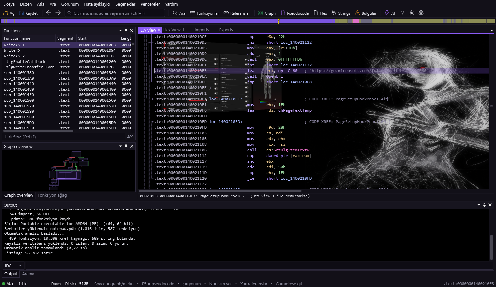
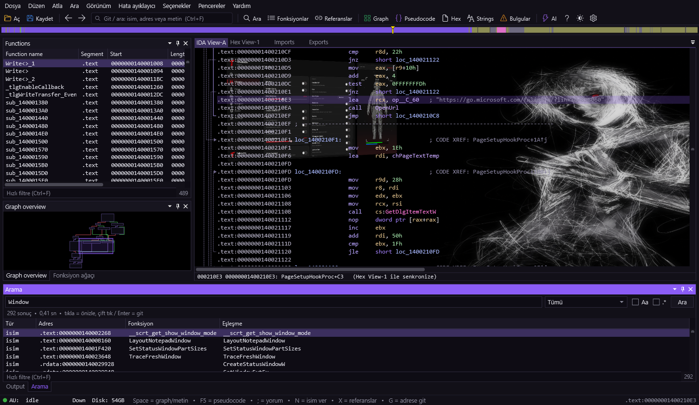

Bir .exe veya .dll sürükle; tlk-hex onu okunur
assembly'ye çevirir, fonksiyonları ve çağrıları çıkarır, akışı çizer. Olanı anlamak için.
Kendi PE / ELF / binary yükleyicisi ve disassembler motoru. Fonksiyonlar, çapraz referanslar, switch tabloları, string'ler ve veri tipleri kendiliğinden çıkar.
Space ile fonksiyonun blok grafiği. Yeşil/kırmızı/mavi dallar, zoom, kuş bakışı harita.
F5 ile assembly'nin C benzeri okunur hali. AI bağlıysa daha temiz bir çeviri de alınır.
İsim, metin, kod satırı, yorum, bayt dizisi (48 8B ?? 05) ve sabit değer — yazdıkça sonuç.
Microsoft sembol sunucusundan PDB indirir; sub_140001A54 gibi isimler gerçek fonksiyon adlarına döner.
Ham baytları gör, F2 ile düzenle, yamayı dosyaya uygula ya da DIF olarak dışa aktar. Orijinal bozulmaz.
Yeniden adlandır, yorum ekle, fonksiyonları klasörle. Çalışman kaydedilir, dosyayı tekrar açınca geri gelir.
Kendi API anahtarınla: "bu fonksiyon ne yapıyor?" diye sor, güvenlik değerlendirmesi al, pseudocode'u iyileştir.
Şüpheli API kullanımları, yüksek entropi, imzasız dosya gibi göstergeleri tek listede toplar.
Adresler, çapraz referanslar, yığın değişkenleri, import çağrıları ve segmentler — alışık olduğun düzen.
Bir isme çift tıkla, oraya gider; Esc ile geri dönersin. Fareyi bir ismin üzerinde beklet, önizlemesi çıkar.


Kapsamı seç — isimler, metinler, kod, yorumlar, bayt dizisi, sabit değer — yazmaya başla, sonuçlar dolsun.
Sonuca tıkla = önizle; çift tık ya da Enter = oraya git. Büyük dosyalarda bile saniyeler içinde.
Hayır. tlk-hex bir analiz ve tersine mühendislik aracıdır: kendi kodunu, zararlı yazılımı, CTF dosyalarını ve izinli güvenlik testlerini anlamak için. Satın almadığın bir yazılımın kopya korumasını kaldırmak (crack) ne aracın amacıdır ne de desteklenir. Yetkili olduğun dosyalarda, eğitim ve araştırma amacıyla kullan.
Windows PE (EXE, DLL, SYS, OCX, CPL, SCR, DRV, EFI), Linux ELF (so dahil) ve ham binary. İşlemci olarak x86 ve x64 tam desteklenir; diğer mimariler veri olarak yüklenir.
Hayır, çalıştırmaz. tlk-hex yalnızca statik analiz yapar — dosyayı diskten okur, kodunu çözümler. İncelediğin dosya hiç çalıştırılmadığı için zararlı örnekleri incelemek de uygundur.
Yalnızca PDB dosyasının adı ve kimliği (GUID) Microsoft sembol sunucusuna gider — dosyanın kendisi değil. İndirilen PDB önbelleğe alınır; aynı dosya sonraki açılışta internetsiz isimlenir. Seçenekler'den kapatılabilir.
Kendi API anahtarın. Seçenekler → AI desteği. Anahtar girilmeden AI özellikleri pasiftir; analiz ve tüm diğer özellikler anahtarsız da tam çalışır.
Hayır. Ctrl+W ile çalışman ayrı bir veritabanına yazılır — orijinal dosyaya dokunulmaz. Aynı dosyayı tekrar açtığında isimler, yorumlar, tanımlar ve yamalar geri gelir.
 tlk
tlk